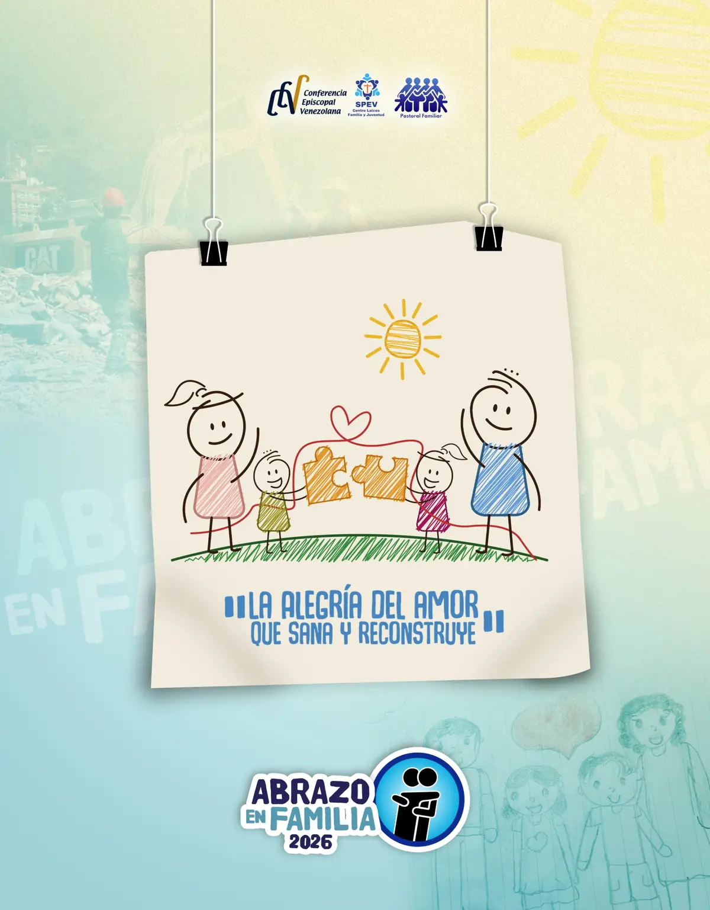

Secretariado Permanente del Episcopado Venezolano
Centro de Laicos, Familia y Juventud
Centro de la Conferencia Episcopal Venezolana que acompaña a los fieles laicos en su vocación y su misión en la Iglesia. Trabaja con los secretariados y las instancias diocesanas en tres áreas: Laicos, Familia y Juventud.


Lo último que hemos hecho

Encuentro Nacional de Laicos «Unidos en la Misión 2026»
Del 13 al 15 de noviembre de 2026. Realizado.
Seguir leyendo
II Encuentro de Parejas, «Amarse en lo cotidiano»
Sábado 17 de octubre de 2026. Realizado.
Seguir leyendo
Campaña Abrazo en Familia 2026
Lanzamiento nacional el 9 de octubre de 2026. Día del Abrazo en Familia el domingo 8 de noviembre, según las diócesis de El Tigre y Carora. Realizado.
Seguir leyendo
Videos
Centro de Laicos, Familia y Juventud del SPEV
Presentación breve del Centro dentro del Secretariado Permanente del Episcopado Venezolano. Resume su servicio de acompañar el apostolado de los fieles laicos.
Publicado el 9 de febrero de 2025 · 0:40 · Fuente: canal de YouTube del Centro
Reza con el Papa: por el buen uso de las riquezas (noviembre de 2026)
Intención de oración del Papa para noviembre de 2026, sobre el buen uso de las riquezas. Se incluye como apoyo a la oración de los fieles que acompaña el Centro; no es una producción del Centro.
Publicado en noviembre de 2026 · Fuente: canal El Video del Papa en YouTube
La fe, vivida donde están los laicos
- En la familia. La fe se aprende y se transmite en casa.
- En el trabajo. Se vive en lo que hacemos cada día.
- En la comunidad. Se comparte con la parroquia, los grupos y los movimientos.
- En la sociedad. Se convierte en servicio a los demás.
El Centro anima la vocación y la misión de los fieles laicos, acompaña su apostolado, les ofrece formación y promueve los ministerios que pueden confiarse a laicos. Conozca el Área de Laicos.
Tres áreas
Laicos
Anima la misión de los fieles laicos, los forma para el apostolado y los reúne en encuentros nacionales y espacios de escucha.
Seguir leyendoFamilia
Acompaña a las familias, defiende la vida y propone cada año la campaña Abrazo en Familia.
Seguir leyendoJuventud
Reúne a los jóvenes en la Jornada Nacional de la Juventud y los acompaña rumbo a la JMJ Seúl 2027.
Seguir leyendo